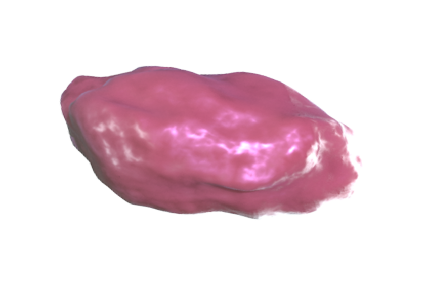
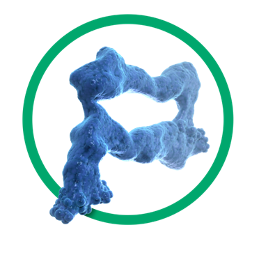
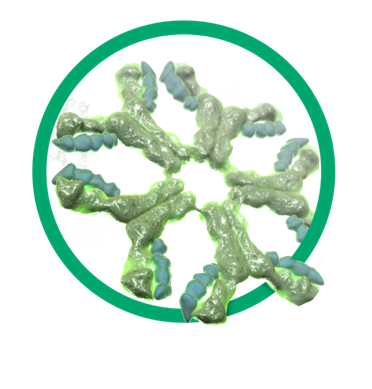
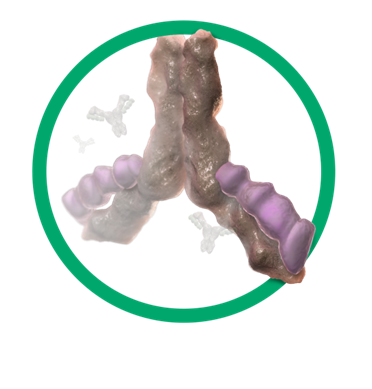
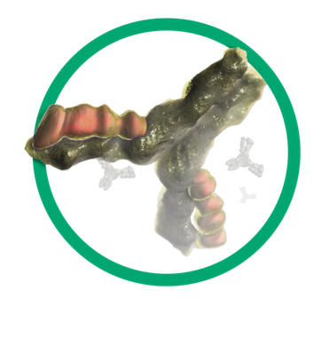
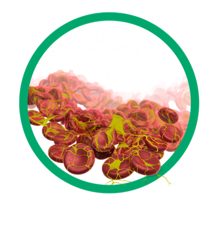

Elements in our blood or sample conditions may interfere with TnI assay performance 27,28
     Heparin
Rheumatoid factors
Heterophilic antibodies
Autoantibodies
Fibrin & Hemolysis
All of these factors may interfere with TnI assay performance:
- Heparin
- Rheumatoid factors
- Heterophilic antibodies
- Autoantibodies
- Fibrin
- Hemolysis
Troponin I experiences more analytical interferences than Troponin T which could lead to inaccurate results and therefore
affect patient management.